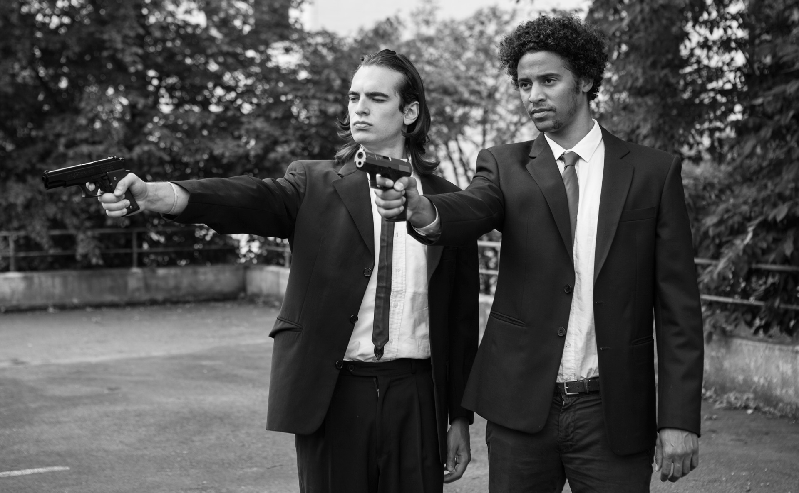

Co-Authors
Matthieu Liénart
Valentin Kraft
Advisors
Prof. Dr. Mehul Bhatt
Jakob Suchan
Actress
Amalia Kassai
Date
4 August 2016
Category
Virtual Reality
La Haine, Pulp Fiction & The Royal Tenenbaums in 180° video
Virtual Reality is becoming an area of focus for media platform. Various sides of the digital media industries have been racing to book their place in the participation into the leading immersive environment. In this project, we attempt to open up the domain of research towards transferring cinema into VR. The focus of the project engulfs the concept of applying cinematic techniques into 180° VR dedicated content and testing their degree of success, in attempt to make VR content acquiring the cinematic feel and distinctive appeal.
To achieve this we selected classic movie scenes that cover a range of exciting cinematic techniques to implement in immersive platforms. Our approach was to recreate the scenes in the most identical appeal regarding camera positions, setting, color grading and all the other aspect that would serve the original scenes justice. After creating our own 180 degree camera rig and shooting the material, it was time to furtherly study its success. We designed an experiment addressing the public to gain evidence that supports our hypothesis through subjective surveys and head-tracking information. The collected data traversed through the attributes of immersion, narration and visual perception.


Pulp Fiction
Low-Angle (Trunk) Shot in Flat:La Haine
Dolly Zoom in Flat:The Royal Tenenbaums
Different Cinematic Techniques in Flat: